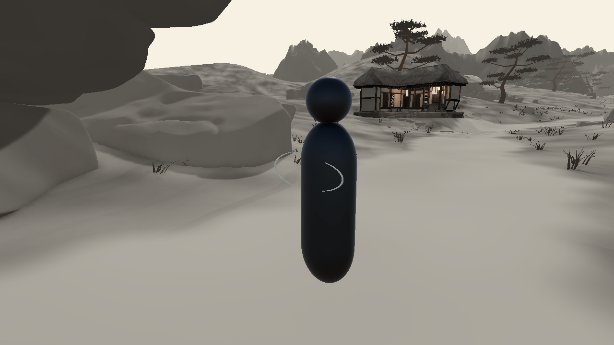

082 섬 · 사용자 비주얼 검토 대기읽히는 쇠눈
큰 교차 리본을 길이가 다른 두 곡선으로 바꿨습니다. 목표 양옆에서 잠깐 넓어졌다가 작게 자리 잡습니다.
심안 효과의 표식 시안입니다. 실제 적 속성·투사체 궤적 데이터는 아직 연결되지 않았습니다. 영상의 인형은 검수용 표적입니다.
짧은 재생
C2 기본 카메라 · 시작부터 소멸까지목표 주변 근접 카메라
수정 전후
확대 이미지

기술 기록과 한계
두 곡선을 합친 본체는 400 정점·792 tris, 유지 구간 크기는 약 56×22×1.4cm입니다. 기존 KTP 금 속성 발동 문양, Pattern_236 마스크와 3.9초 수명을 유지했습니다.
진단용 카탈로그 재생이며 실제 플레이어 입력 영상은 아닙니다. 예측 궤적이나 적 속성 힌트를 임의로 추가하지 않았습니다. 비주얼 판정은 사용자 검토 대기입니다.
영상은 1280×720·24fps. 이전 그림은 D3D12, 현재는 Editor 복구용 D3D11에서 촬영했습니다.
작업 보고서 · 단독 재생·소멸 기록 · 메시 기록 · 변경 범위 확인
앞선 시안: 석 · 손 · 기존 전체 목록